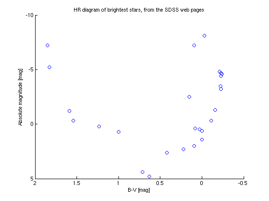

Script to plot an HR diagram
Data for the brightest stars, taken from the SDSS web pages at http://cas.sdss.org/dr7/en/proj/advanced/hr/simplehr.asp
AH 2010.1.29
Contents
Read in the data from a file called starsTmp.txt
The file can be created by entering the values into a text-editor window and saving it.
X = importdata('starsTmp.txt',' '); % read data file
Plot the data
clf % clear the figure % First turn the x-axis around: more luminous is more negative, and % bluer stars are hotter (and temperature increases to the left on % an HR diagram) set(axes,'XDir','reverse', 'YDir', 'reverse') hold on % lock plot with with these axis settings plot(X(:,3), X(:,2), 'o') % plot data ylabel('Absolute magnitude [mag]') % make labels and title xlabel('B-V [mag]') title('HR diagram of brightest stars, from the SDSS web pages') hold off % release plot